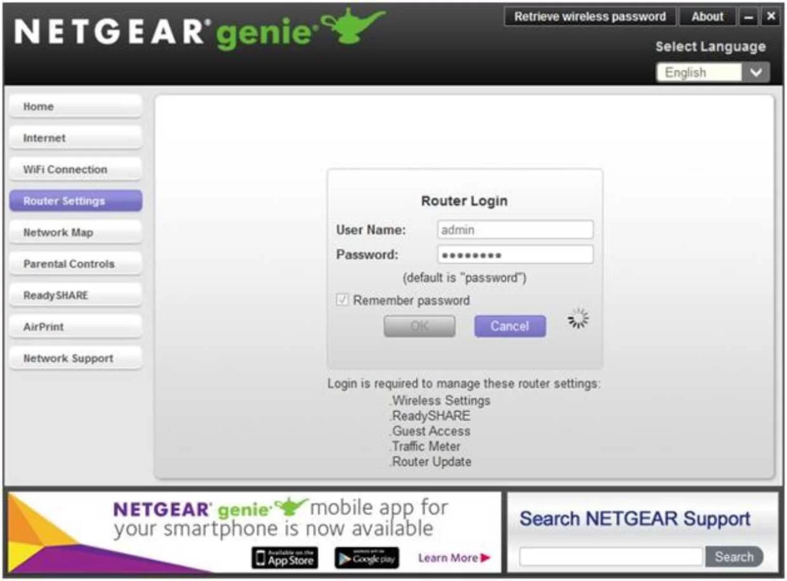

If attacked from outside, the router can easily become infected or taken over, so immediate action is required.
Please take the following measures
Possibility of unauthorized access
Anyone can access the following web pages:

countermeasure
If it is the router settings screen, follow the device's manual to stop exposing the management screen to the Internet. If it is the screen of a device in your home, follow the router's manual to check the "Port Conversion"* settings and turn off the [port number] setting.
*The name for this varies depending on the manufacturer, and it may also be called "port forwarding," "port mapping," "static NAT," etc. Click here for more information.
The web page is open to the Internet. There is a risk of unauthorized access or malware infection. Measures are required.
Please check your equipment and take appropriate measures.
*Answer is optional
Q. Is this functionality intentionally exposed to the Internet?
Q: What is it used for?
Q. Please tell us the type of device, manufacturer, model number, etc. to the extent that you know.
Q: Tell us how you set it up.
Would you like to implement the proposed measures?
Can you implement the suggested measures yourself?
If this is not possible, please explain why.
Ask your university for help
If you would like the university to support you in dealing with malware infections, vulnerabilities, and the risk of unauthorized access, please contact us using this form. The university will send you an email at a later date.
What happens if the infection is left untreated?
01
Attacking external devices
They can spread the infection to other devices or
participate in attacks on online services.
02
Your identity is stolen
You will be redirected to a fraudulent website and
your personal information will be stolen.
03
Being asked for money
Your data is encrypted and
you are asked to pay a fee to restore it.
Please answer the following
Previously, we have reported the following issues and suggested solutions:
Risk of unauthorized printing
countermeasure
Check the "Port Conversion"* settings according to the router manual and turn off the [port number] setting.
*Depending on the manufacturer, this may be called "port forwarding," "port mapping," "static NAT," etc. For more information, click here.
There is a risk of unauthorized manipulation of routers, computers, and IoT devices